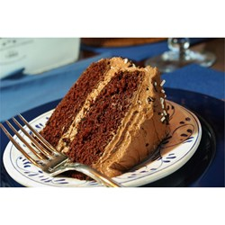

Home page
Preheat oven to 350 degrees F (175 degrees C). Grease and flour a 10 inch tube pan.
Cream shortening and butter until light and fluffy, gradually adding sugar. Beat well at medium speed of an electric mixer. Add egg yolks, one at a time, beating after each addition.
Sift flour, baking powder, salt, cocoa and cinnamon together. Add to creamed mixture alternately with milk, beginning and ending with flour mixture. Mix just until blended after each addition. Stir in vanilla and almond extracts.
In a clean bowl, beat egg whites until stiff peaks form. Fold carefully into cake batter, mixing only until no streaks remain. Pour batter into a greased and floured 10 inch tube pan.
Bake at 350 degrees F (175 degrees C) for 1 hour and 15 minutes, or until a toothpick inserted in center comes out clean. Cool in pan 10 minutes, remove from pan, and let cool completely on a wire rack.